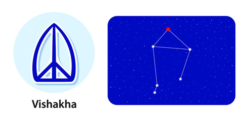

<
1. Pada 1st: The first pada of the Vishaka Nakshatra falls in the Aries Navamsa and is ruled by Mars. The people born in this pada are highly inspirational and romantic. They really work hard towards their social ambitions and can go to any extent in love affair.
2. Pada 2nd: The second pada of the Vishaka Nakshatra falls in the Taurus Navamsa and is ruled by Venus. The people born in this pada will be highly creative and talented. This quarter makes the native intelligent.
3. Pada 3rd: The third pada of the Vishaka Nakshatra falls in the Gemini Navamsa and is ruled by Mercury. The people born in this pada may have an interest in reading, religion, etc., and they have excellent communication skills.
4. Pada 4th: The fourth pada of the Vishaka Nakshatra falls in the Cancer Navamsa and is ruled by the Moon. The natives born in this pada can get jealous easily. They are also highly emotional and sensitive too.
“forked, having branches”; also known as rādhā “the gift”α, β, γ and ι Librae
Lord: Guru (Jupiter)
Symbol : Triumphal arch, potter’s wheel
Deity : Indra, chief of the gods; Agni, god of Fire
Stone: Yellow Sapphire is your lucky stone.
Lucky numbers : 3 and 9
Lucky Day: Tuesday, Thursday and Friday
If a baby born in this nakshatra give her or him a name with starting letter “T”.
These persons should not live in West facing houses.
Persons born in Visakha nakshatram will have good taarabalam with following nakshatrams:
Pushyami, Magha, Uttara, Chitta, Swati, Anuradha, Moola, Uttarashada, Dhanishta, Satabisham, Uttarabhadra, Aswini, Kritika, Mirgasira, Arudra.
Indian zodiac: 20° Tula – 3°20′ Vrishchika
Western zodiac 16° – 29°20′ Scorpio
Vishaka Nakshatra
Characteristics male
The male native born in Vishakha Nakshatra is very optimistic in nature. These natives are brimming with energy and intelligence that they use to get the most out of anything they do or any situation. The native is God-fearing and hence is mindful of his deeds. The value system of the natives is conservative, however, they don't entertain anything that goes against human rights or simply harms the worth of a human in any way. Also, the male born in Vishakha Nakshatra detests superstitions. As a person, the male gives off love to everyone. He has a humbleness towards animals and nature. On the downside, the native can be very rude to you at times when he needs his space. In such situations, it is better to leave them on their own.Profession male
The male native born in Vishakha Nakshatra has a blessing of speech. Hence anything that involves speech is a good profession for him. The speaking skill of his also ensures him the capability to convince anyone and everyone. These people thus can even try a hand at politics if they wish to. The native born in Vishakha Nakshatra has a loose-hand when it comes to saving money and thus may become a spendthrift. However, if a businessman, the person eventually will learn how to save. Also, a profession in the banking sector is also good for these natives.Compatibility male
The male native born in Vishakha Nakshatra is close to his mother but may not have the best of her due to some unforeseen situation or separation from her. The native shares a normal bond with his father. However, he will get materialistic gains from his father. Nevertheless, due to being less attached to his father, the male born in Vishakha Nakshatra will grow to be a self-dependent person. Talking about spouse, the native will share a great bond with her. Both of you will live a life you have imagined with nothing much to hinder your love and peace.Health male
Talking about the health of the male born in Vishakha Nakshatra, he needs to be careful while driving as he is prone to paralysis till the age of 35. Post this age, your health will remain good with minute breathing problems.Characteristics female
The female native born in Vishaka Nakshatra reeks off a charming personality due to her sweet and soft-spoken nature. The lady is both homely and a dedicated professional with set goals in life that she works hard to achieve. Also, the lady born in the Vishakha Nakshatra is likely to be naturally beautiful. The trait, although, brings her a lot of attention from the opposite gender, but also jealousy from other women. This is why she needs to be cautious about who she calls her friend. Other than just being smart, the lady is also very religious and often goes on pilgrimages. On the downside, the lady needs to be more open to people rather than being confined to her charm.Profession female
The female native born in Vishakha Nakshatra has a bent toward anything that involves art. Hence, these women will have a good career if they dedicate their time to a profession such as fashion, poetry, media, advertisement and anything related to travelling or being an influencer. Also, support, either from parents or their spouse, is a very basic need for the ladies born in Vishakha Nakshatra to get success in life. Thus, it is suggested that you marry the one who treats your goals as his and doing so will make you independent and empowered in life.Compatibility female
The female native born in Vishakha Nakshatra is a family-oriented person who supports her family both on personal and professional fronts. The lady gets along well with her husband who likes her for her independent and focused nature. The two together can achieve a lot only if they delay bringing a child to this world a little. The lady is likely to be close to her mother. Besides, she will also share a good bond with her father in law.Health female
Talking about the health of the female born in Vishakha Nakshatra, the lady is vulnerable to kidney trouble and general weakness. These, however, are not serious troubles and can be averted by simply taking good care of yourself. Eating junk must be avoided.Vishaka Nakshatra Padas
1. Pada 1st: The first pada of the Vishaka Nakshatra falls in the Aries Navamsa and is ruled by Mars. The people born in this pada are highly inspirational and romantic. They really work hard towards their social ambitions and can go to any extent in love affair.
2. Pada 2nd: The second pada of the Vishaka Nakshatra falls in the Taurus Navamsa and is ruled by Venus. The people born in this pada will be highly creative and talented. This quarter makes the native intelligent.
3. Pada 3rd: The third pada of the Vishaka Nakshatra falls in the Gemini Navamsa and is ruled by Mercury. The people born in this pada may have an interest in reading, religion, etc., and they have excellent communication skills.
4. Pada 4th: The fourth pada of the Vishaka Nakshatra falls in the Cancer Navamsa and is ruled by the Moon. The natives born in this pada can get jealous easily. They are also highly emotional and sensitive too.